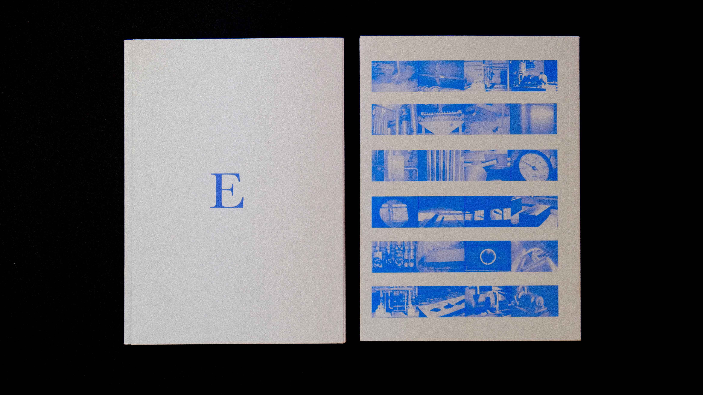

Juliana Zepka (1995, French-Brazilian) evaluates the role of the artist as a vessel for the untold, the unwritten, the unheard, the forgotten. She lives and works in Paris.
Her work circles around the echoic relation between text and images, facts and fiction, found objects and (hi)stories. By using “anarchiving” practices as a way to connect the seer and the seen through speculative narratives and multi-media installations, she aims to excavate anonymous and established archival material out of the past by exposing them in the light of present times. Her approach to art is rooted in collaboration and interdisciplinarity.

on strike
in support of the ongoing social movements,
high school and college students,
staff and researchers in the national education system,
workers in all precarious sectors,
and victims of intolerable police and state violence,
the struggle for our rights continues.
on strike
in support of the ongoing social movements,
high school and college students,
staff and researchers in the national education system,
workers in all precarious sectors,
and victims of intolerable police and state violence,
the struggle for our rights continues.
on strike
in support of the ongoing social movements,
high school and college students,
staff and researchers in the national education system,
workers in all precarious sectors,
and victims of intolerable police and state violence,
the struggle for our rights continues.
Juliana Zepka (1995, French-Brazilian) evaluates the role of the artist as a vessel for the untold, the unwritten, the unheard, the forgotten. She lives and works in Paris.
Her work circles around the echoic relation between text and images, facts and fiction, found objects and (hi)stories. By using “anarchiving” practices as a way to connect the seer and the seen through speculative narratives and multi-media installations, she aims to excavate anonymous and established archival material out of the past by exposing them in the light of present times. Her approach to art is rooted in collaboration and interdisciplinarity.
2023 – Ghosts in Archive, Ghosts of Protest: an artistic experience of spectral inquiry, with Olya Korsun, Sandberg Institute + International Institute of Social History, Amsterdam (NL)
2023 – Webdesign for Galerie Orbis Pictus (The Farm Paris)
2023 – Hit Again – Bourse Révélations Emerige, video content for Emerige Mécénat (The Farm Paris)
2023 – Landing page for the installation Réflexions, webdesign, coding, development, Atelier Barrois (The Farm Paris)
2023 – Video editer for EC Expérience – Site verrier de Meisenthal, CIAV Meisenthal (Équipe Créative)
2022 – Video editer for EC Expérience – Fondation de l'Œuvre Notre-Dame, montage vidéo, étalonnage, Cathedral Labs (Équipe Créative)
2022 – Webdesign and development for artist Susanne Janssen's website
The Overview Project – Annette Hoffmann,
Metaphern des Gedächtnisses : «On the Brink of Remembering», [presse], Kulturjoker, Dec.2022-Jan.2023, p18, 2022
The Overview Project – Felizitas Diering, [presse], Bz Basel, 30.Dec.2022, p15
Gardens of Law – Joris van den Einden, «Graduation Shows 2022 – Sandberg Instituut: Look and contemplate», [online], Metropolis M, 14.06.22
2017 – En l'occurrence, CEAAC, Strasbourg (FR)
2020/2022 – F For Fact, Sandberg Institute, Amsterdam (NL)
2018/2019 – Master Degree, Art Theory and Practice, Université de Strasbourg (FR)
2016/2018 – Master Degree, Critical Studies, Université de Strasbourg (FR)
{}